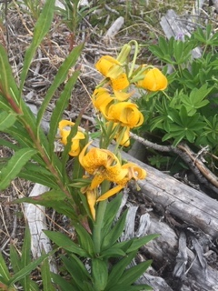
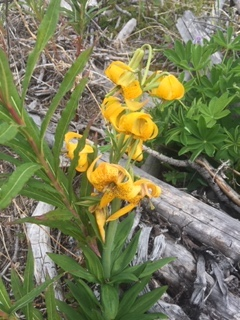
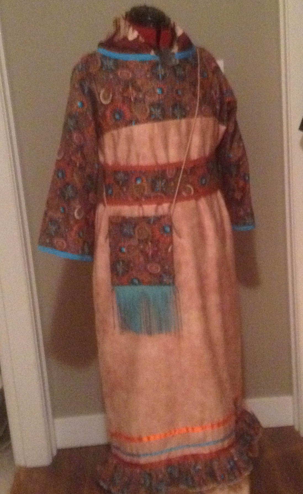
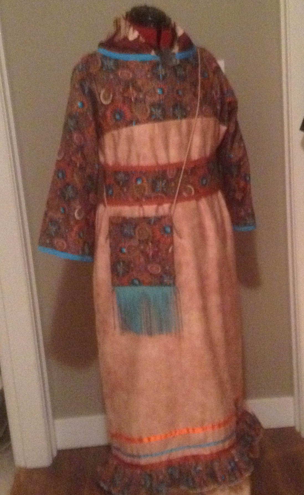

Wild flowers
Here are photographs of honey-suckles, red columbine, tiger lilies and orchids, these flowers can be found throughout the Nlakapmux territory. These flowers mainly bloom throughout the spring and early summer months.
- honey-suckles
- red columbine
- tiger lilies
- orchids
 
Click me

Click me
Land scape, scenery
I have photographed numerous land scape and scenery pictures, throughout the Nlakapamux territory and other parts of the world.
- pine-mtns
- field-of-indian-paint-brushes
- old-tree-in-field
- rainbow-apsen
- reflections
- roots-grown-over-rocks
Nomadic Creations
These photographs of reglia,(pow wow outfits) and bead work I do. I make traditional, fancy and jingle outfits; ribbon skirts, dresses and shirts, plus numerous other sewing projects such as moss bags, sleeping bags, capes for babies and small children. I work with both home tanned and commercial hide for making mocasins, bags, traditional buckskin outfits and i have some experince working with porquine quills, caribou and moose hair for tufting.
- lilac-fancy-outfit-back
- orange-skirt-top-trad-regalia
- child-purple-jingle
- tradiional-dress
- moose-tanned-medicine-bag
- eagle-feather
 


 Click me
Click me